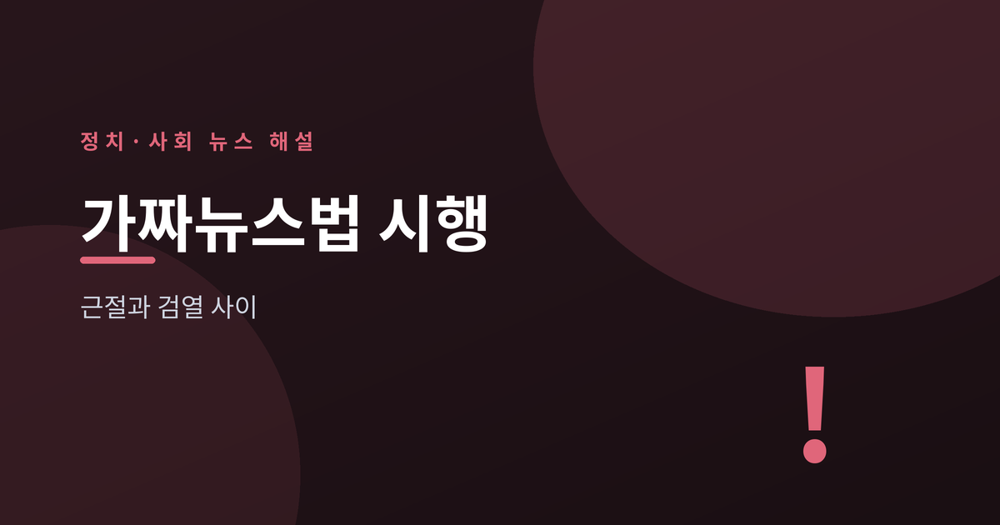
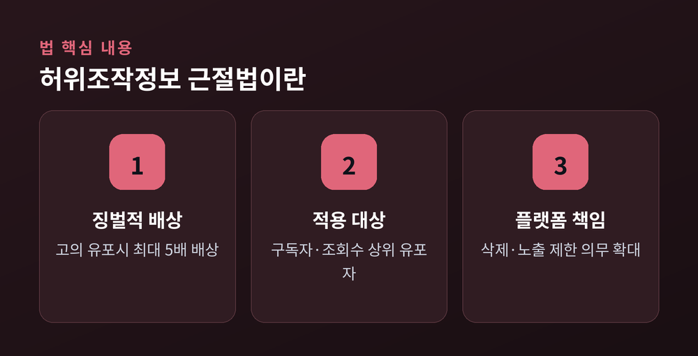
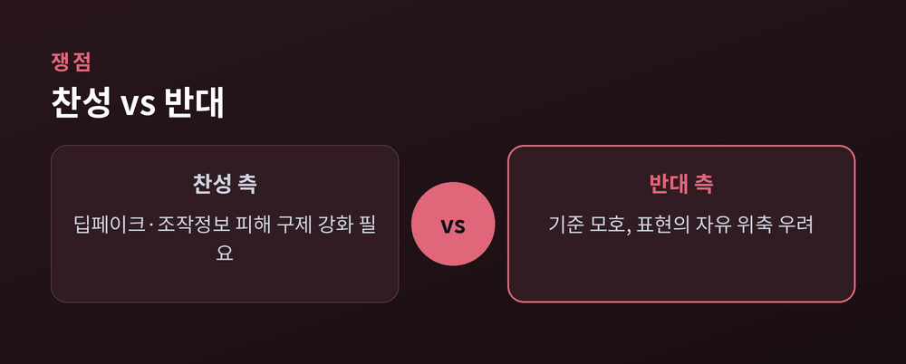
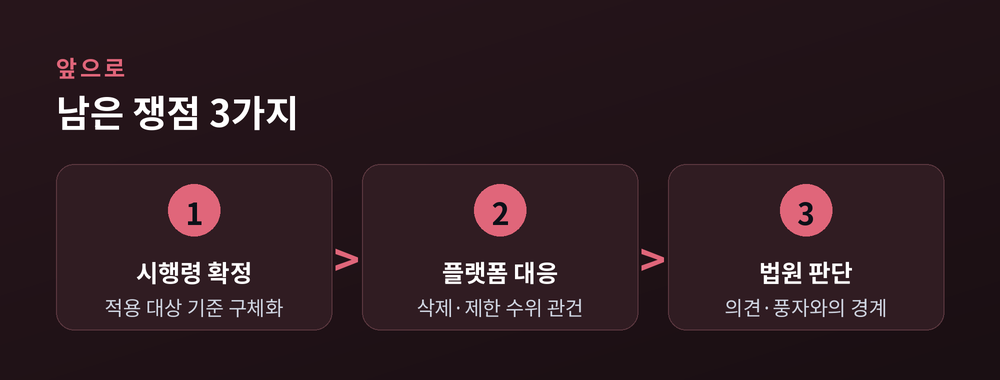

'가짜뉴스 근절'과 '검열' 사이

2026년 7월 7일, 개정 정보통신망법이 시행됐습니다. 흔히 '허위조작정보 근절법'으로 불리는 이 법은 2025년 12월 24일 국회 본회의를 통과해 2026년 1월 공포됐습니다. 국회 과학기술정보방송통신위원회 논의를 거쳐 더불어민주당 주도로 처리됐습니다.
핵심은 새로운 형사처벌 신설이 아니라 징벌적 손해배상 제도 도입입니다. 고의로 허위·조작정보를 유포해 타인에게 피해를 준 경우, 피해액의 최대 5배까지 배상 책임을 물을 수 있습니다. 법은 '허위정보'(내용의 전부 또는 일부가 사실과 다른 정보)와 '조작정보'(사실로 오인하게끔 변형한 정보, AI 딥페이크·사진합성·음성변조 포함)의 개념을 구체화했습니다.

5배 배상 대상은 모든 이용자가 아닙니다. 정보 유통을 업으로 하면서 일정 규모 이상인 사업자·개인이 주된 적용 대상이며, 시행령 초안 기준으로는 구독자 10만 명 이상 또는 월평균 조회수 10만 회 이상인 경우가 거론됩니다. 세부 기준은 아직 시행령에서 확정되는 중입니다. 법은 또한 네이버·카카오 등 플랫폼 사업자에게 게시물 삭제·노출 제한과 관련한 책임을 확대하는 내용도 담고 있습니다.
찬성 측은 AI 딥페이크와 조직적 여론조작으로 인한 피해가 커지는 상황에서, 기존 형사처벌 중심 대응만으로는 신속한 피해 구제가 어렵다는 점을 근거로 듭니다. 영향력이 큰 유튜버·인플루언서 등에게 더 무거운 책임을 지우는 것이 필요하다는 논리입니다. 법안은 국회 표결에서 찬성 170표, 반대 3표, 기권 4표로 통과됐습니다.
반대 측은 '허위·조작정보'의 판단 기준이 모호하다는 점을 문제 삼습니다. 방송기자연합회, 전국언론노동조합, 한국기자협회 등 언론 현업 5단체는 징벌적 손해배상이 권력자의 소송 남발로 이어져 언론·표현의 자유를 위축시킬 수 있다고 우려했습니다. 플랫폼 사업자가 배상 책임을 피하려 게시물을 선제적으로 삭제하는 '과잉 검열'이 벌어질 수 있다는 지적도 나옵니다. 미국 국무부 측도 이 법을 표현의 자유 침해 및 온라인 무역 장벽 소지가 있다고 공개적으로 우려를 표명한 바 있습니다.

| 구분 | 주요 논거 |
|---|---|
| 찬성 측 | 딥페이크·조직적 허위정보 피해 구제 강화, 영향력 큰 유포자 책임 확대 |
| 반대 측 | 판단 기준 모호, 소송 남발·언론 위축 우려, 플랫폼 과잉 삭제 가능성 |
"표현의 자유는 훼손될 것이고, 징벌적 손배가 도입된 이상 권력자들의 소송 남발로 인한 언론 자유 위축은 막을 수 없다." — 언론현업 5단체 (PD저널 보도 인용)
법은 이런 우려를 의식해 객관적 사실에 기반한 의견·비판, 풍자·패러디, 학술적 논쟁 등은 원칙적으로 허위·조작정보에 해당하지 않는다는 예외 조항도 두고 있습니다. 다만 이 경계가 실제 적용에서 얼마나 명확하게 지켜질지는 아직 지켜봐야 할 부분입니다.
시행 첫날부터 온라인에서는 "내 댓글도 처벌 대상이냐"는 식의 혼란과 질문이 이어졌습니다. 다만 개인 이용자 대다수는 징벌적 손해배상의 직접 대상이 아니라, 정보 유통을 업으로 하는 일정 규모 이상 사업자·인플루언서가 주된 적용 대상이라는 점은 확인할 필요가 있습니다.

앞으로 쟁점은 크게 세 가지로 모입니다. 첫째, 구독자·조회수 기준 등 적용 대상을 구체화할 시행령이 어떻게 확정되는지입니다. 둘째, 플랫폼 사업자들이 실제로 게시물 삭제·노출 제한을 어느 수준까지 강화할지입니다. 셋째, 법원이 '허위·조작정보'와 '의견·비판·풍자'의 경계를 실제 판결에서 어떻게 그을지입니다. 시행 이후 축적되는 사례가 이 법이 피해 구제 장치로 자리 잡을지, 표현의 자유 위축 우려가 현실화할지를 가늠하는 기준이 될 전망입니다.